(??) Tmp#
Motivation: Scratch notebook.
Show code cell source
# HIDE CODE
import os, sys
from copy import deepcopy as dc
from os.path import join as pjoin
from IPython.display import display, IFrame, HTML
# tmp & extras dir
git_dir = pjoin(os.environ['HOME'], 'Dropbox/git')
extras_dir = pjoin(git_dir, 'jb-MTMST/_extras')
fig_base_dir = pjoin(git_dir, 'jb-MTMST/figs')
tmp_dir = pjoin(git_dir, 'jb-MTMST/tmp')
# GitHub
sys.path.insert(0, pjoin(git_dir, '_MTMST'))
from figures.fighelper import *
from analysis.opticflow import *
from vae.vae2d import VAE, ConfigVAE
from vae.train_vae import TrainerVAE, ConfigTrainVAE
# warnings, tqdm, & style
warnings.filterwarnings('ignore', category=DeprecationWarning)
from rich.jupyter import print
%matplotlib inline
set_style()
vae = VAE(ConfigVAE(
'obj1', n_ch=37, n_latent_scales=1, n_latent_per_group=42, n_groups_per_scale=1,
n_enc_cells=0, n_enc_nodes=3, n_dec_cells=0, n_dec_nodes=2,
n_pre_blocks=3, n_pre_cells=13,
n_post_blocks=3, n_post_cells=12,
save=False,
))
vae.print()
msg = ', '.join([
f"# enc ftrs: {sum(vae.ftr_sizes()[0].values())}",
f"# conv layers: {len(vae.all_conv_layers)}",
f"# latents: {vae.cfg.total_latents()}",
])
print(msg)
+--------------+------------+ | Module Name | Num Params | +--------------+------------+ | VAE | 18.9 Mil | | --- | --- | | stem | 370 | | pre_process | 12.0 Mil | | enc0 | 88.2 K | | enc_sampler | 99.6 K | | expand | 7.1 K | | stem_decoder | 50.3 K | | post_process | 6.6 Mil | | out | 668 | +--------------+------------+
# enc ftrs: 222, # conv layers: 209, # latents: 42
vae.scales, vae.vanilla
([2], True)
vae.enc_tower
[]
vae.dec_tower
[]
Vanilla:
fixate1: ./fit_vae.sh fixate1 cuda:0 –n_ch 40 –n_latent_scales 1 –n_latent_per_group 420 –n_groups_per_scale 1 –n_enc_cells 0 –n_enc_nodes 3 –n_dec_cells 0 –n_dec_nodes 2 –n_pre_blocks 3 –n_pre_cells 13 –n_post_blocks 3 –n_post_cells 12 –optimizer adamax
obj1 ./fit_vae.sh obj1 cuda:0 –n_ch 37 –n_latent_scales 1 –n_latent_per_group 42 –n_groups_per_scale 1 –n_enc_cells 0 –n_enc_nodes 3 –n_dec_cells 0 –n_dec_nodes 2 –n_pre_blocks 3 –n_pre_cells 13 –n_post_blocks 3 –n_post_cells 12 –optimizer adamax
tr = TrainerVAE(
# model=torch.compile(vae),
model=vae,
cfg=ConfigTrainVAE(),
device='cpu',
)
ds = tr.dl_tst.dataset
ds.category, ds.n_obj
('obj', 1)
U = np.array([[1, 1, -1], [1, 0, 2], [1, -1, -1]])
V_dagger = np.array([[2, 2, 2], [3, 0, -3], [-1, 2, -1]])
U @ V_dagger, V_dagger @ U
(array([[6, 0, 0],
[0, 6, 0],
[0, 0, 6]]),
array([[6, 0, 0],
[0, 6, 0],
[0, 0, 6]]))
J = np.array([[0, 0, 0], [0, -1, 1], [0, 0, -1]])
J
array([[ 0, 0, 0],
[ 0, -1, 1],
[ 0, 0, -1]])
U @ J @ V_dagger
array([[-5, 4, 1],
[ 2, -4, 2],
[ 3, 0, -3]])
J
array([[ 0, 0, 0],
[ 0, -1, 1],
[ 0, 0, -1]])
J @ J @ J @ J @ J
array([[ 0, 0, 0],
[ 0, -1, 5],
[ 0, 0, -1]])
r = np.array([[-5, 4, 1], [2, -4, 2], [3, 0, -3]])
r
array([[-5, 4, 1],
[ 2, -4, 2],
[ 3, 0, -3]])
for u in [np.array([[1, 1, 1]]).T, np.array([[1, 0, -1]]).T, np.array([[1, -2, 1]]).T]:
print(f'u =\n{u}\n\nr @ u =\n{r @ u / 6}')
print('~~~' * 10)
u = [[1] [1] [1]] r @ u = [[0.] [0.] [0.]]
~~~~~~~~~~~~~~~~~~~~~~~~~~~~~~
u = [[ 1] [ 0] [-1]] r @ u = [[-1.] [ 0.] [ 1.]]
~~~~~~~~~~~~~~~~~~~~~~~~~~~~~~
u = [[ 1] [-2] [ 1]] r @ u = [[-2.] [ 2.] [ 0.]]
~~~~~~~~~~~~~~~~~~~~~~~~~~~~~~
for v in [np.array([[1, 1, 1]]), np.array([[1, 0, -1]]), np.array([[1, -2, 1]])]:
print(f'v =\n{v}\n\nr @ v =\n{v @ r / 6}')
print('~~~' * 10)
v = [[1 1 1]] r @ v = [[0. 0. 0.]]
~~~~~~~~~~~~~~~~~~~~~~~~~~~~~~
v = [[ 1 0 -1]] r @ v = [[-1.33333333 0.66666667 0.66666667]]
~~~~~~~~~~~~~~~~~~~~~~~~~~~~~~
v = [[ 1 -2 1]] r @ v = [[-1. 2. -1.]]
~~~~~~~~~~~~~~~~~~~~~~~~~~~~~~
np.all(r @ u == 0 * u)
True
u = np.array([[1, 0, -1]]).T
u
array([[ 1],
[ 0],
[-1]])
np.all(r @ u == -6 * u)
True
u = np.array([[-1, 0, 1]]).T
u
array([[-1],
[ 0],
[ 1]])
np.all(r @ u == -6 * u)
True
escape_parenthesis('obj1_k-32_z-20x[2,4,8]_enc(1x3)-dec(1x2)-pre(1x3)-post(1x3)/ep160-b600-lr(0.002)_beta(0.15:0x0.5)_lamb(0.0001)_gr(1500.0)_(2023_04_25,09:32)')
obj1_k-32_z-20x[2,4,8]_enc\(1x3\)-dec\(1x2\)-pre\(1x3\)-post\(1x3\)
ep160-b600-lr\(0.002\)_beta\(0.15:0x0.5\)_lamb\(0.0001\)_gr\(1500.0\)_\(2023_04_25,09:32\)
sp_lin.eigh(r, eigvals_only=True)
array([-7.87707438, -3.7125899 , -0.41033572])
sp_lin.det(r)
5.329070518200751e-15
lamb =
sp_lin.det(r - lamb * np.eye(3))
-1516.9133675967296
a = [1, 12, 1]
sp_optim.fsolve(lambda x: x**2 + 12*x + 36)
---------------------------------------------------------------------------
TypeError Traceback (most recent call last)
Cell In[44], line 1
----> 1 sp_optim.fsolve(lambda x: x**2 + 12*x + 36)
TypeError: fsolve() missing 1 required positional argument: 'x0'
w
array([ 6.71789782e-17+0.00000000e+00j, -1.00000000e+00+4.03751371e-09j,
-1.00000000e+00-4.03751371e-09j])
w, v = np.linalg.eig(r)
sp_lin.eigvals(r)
array([ 6.71789782e-17+0.00000000e+00j, -1.00000000e+00+4.03751371e-09j,
-1.00000000e+00-4.03751371e-09j])
ds.x.shape
torch.Size([75000, 2, 17, 17])
show_opticflow(ds.x);

x, norm = next(iter(tr.dl_tst))
show_opticflow(x);
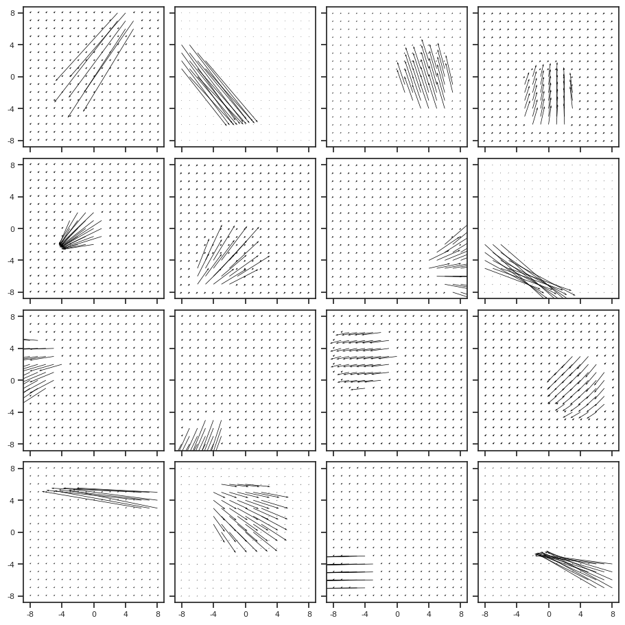
norm.shape
torch.Size([500])
sns.histplot(norm)
<Axes: ylabel='Count'>
x.mean()
tensor(0.0006)
x.shape
torch.Size([500, 2, 17, 17])
mu = x.mean(axis=(1, 2, 3), keepdims=True)
x_prime = x - mu
sns.histplot(mu.ravel())
<Axes: ylabel='Count'>
show_opticflow(x_prime);
show_opticflow_full(x_prime[0]);
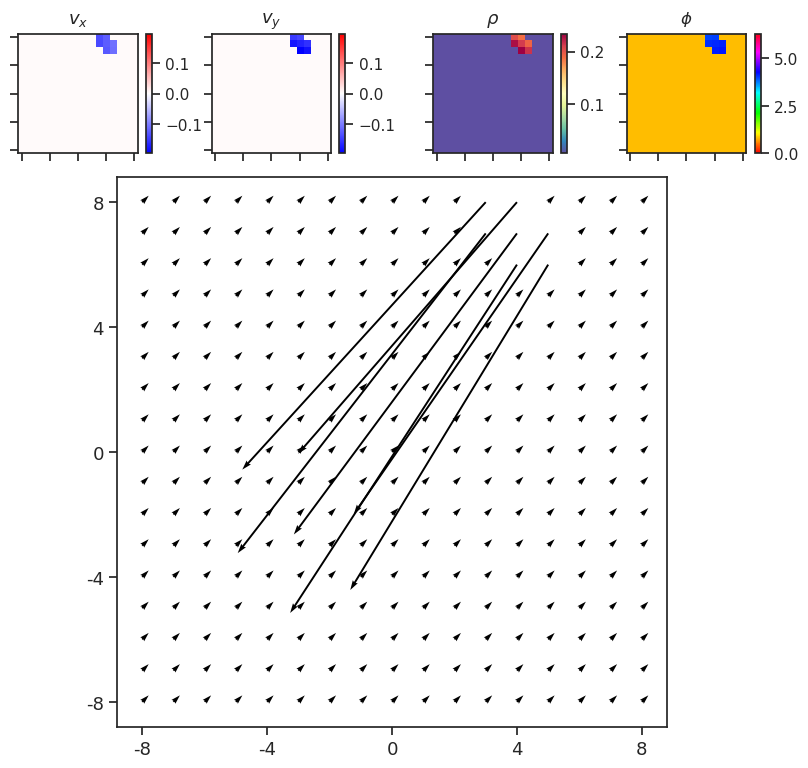
norm[0]
tensor(1.5055)
sp_lin.norm(ds.x[0], axis=0).sum(-1).sum(-1)
1.5054998
sp_lin.norm(x_prime[0], axis=0).sum(-1).sum(-1)
2.9208481
norm_prime = sp_lin.norm(x_prime, axis=1).sum(-1).sum(-1)
sns.histplot(norm_prime)
<Axes: ylabel='Count'>
fig, ax = create_figure(1, 1, (11, 3))
plt.plot(norm, lw=0.8)
plt.plot(norm_prime, lw=0.8);
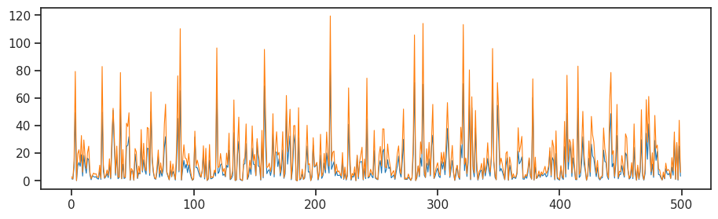
vae = vae.cuda()
vae.stem.weight.device
device(type='cuda', index=0)
%timeit vae.loss_weight()
107 µs ± 22.4 µs per loop (mean ± std. dev. of 7 runs, 10,000 loops each)
torch.cat(vae.all_lognorm).device
device(type='cuda', index=0)
vae.all_lognorm[16].device
device(type='cuda', index=0)
%timeit sum([torch.linalg.norm(e) for e in vae.all_lognorm])
2.77 ms ± 21.7 µs per loop (mean ± std. dev. of 7 runs, 100 loops each)
%timeit torch.linalg.norm(torch.cat(vae.all_lognorm))
94.7 µs ± 16 µs per loop (mean ± std. dev. of 7 runs, 10,000 loops each)
vae.enc_tower[0].ops[1].conv.lognorm
Parameter containing:
tensor([0., 0., 0., 0., 0., 0., 0., 0., 0., 0., 0., 0., 0., 0., 0., 0., 0., 0., 0., 0., 0., 0., 0., 0.,
0., 0., 0., 0., 0., 0., 0., 0., 0., 0., 0., 0., 0., 0., 0., 0., 0., 0., 0., 0., 0., 0., 0., 0.,
0., 0., 0., 0., 0., 0., 0., 0., 0., 0., 0., 0., 0., 0., 0., 0.],
device='cuda:0', requires_grad=True)
self = vae
apply_norm = apply_norm if apply_norm else [
'stem', 'pre_process', 'expand',
'enc0', 'enc_tower', 'dec_tower',
'enc_sampler', 'dec_sampler',
]
self.all_conv_layers, self.all_lognorm = [], []
for child_name, child in self.named_children():
for m in child.modules():
if isinstance(m, (Conv2D, DeConv2D)):
self.all_conv_layers.append(m)
if child_name in apply_norm and m.apply_norm:
self.all_lognorm.append(m.lognorm)
tr = TrainerVAE(
# model=torch.compile(vae),
model=vae,
cfg=ConfigTrainVAE(),
device='cpu',
)
tr.train()
gstep # 9, nelbo: 31.362, grad: 912.6: 0%| | 0/200 [00:25<?, ?it/s]
KeyboardInterrupt
sum(vae.ftr_sizes()[0].values())
5056
print(vae.cfg.name())
obj1_k-32_z-13x[3,6,12]_enc(2x2)-dec(2x1)-pre(1x3)-post(1x3)
len(vae.all_conv_layers), len(vae.all_log_norm)
(218, 173)
0.1 * 273 / 17 ** 2
0.09446366782006921
vae.expand
ModuleList(
(0-3): 4 x DeConv2D(7, 7, kernel_size=(2, 2), stride=(1, 1))
(4-11): 8 x DeConv2D(7, 7, kernel_size=(4, 4), stride=(1, 1))
(12-27): 16 x DeConv2D(7, 7, kernel_size=(8, 8), stride=(1, 1))
)
Trainer#
# from torch import _dynamo
# _dynamo.config.cache_size_limit = 1024
vae = VAE(ConfigVAE(save=False))
tr = TrainerVAE(
# model=torch.compile(vae),
model=vae,
cfg=ConfigTrainVAE(
lr=0.003, batch_size=512, epochs=1000, grad_clip=1000,
lambda_anneal=True, lambda_init=1e-5, lambda_norm=1e-2,
kl_beta=1, kl_anneal_cycles=0),
device='cpu',
)
vae.cfg.total_latents()
35
vae.print()
+--------------+------------+ | Module Name | Num Params | +--------------+------------+ | VAE | 7.4 Mil | | --- | --- | | stem | 1.1 K | | pre_process | 96.0 K | | enc_tower | 5.4 Mil | | enc0 | 66.0 K | | enc_sampler | 215.2 K | | dec_sampler | 204.9 K | | expand | 7.4 K | | dec_tower | 1.4 Mil | | post_process | 40.0 K | | out | 578 | +--------------+------------+
x, norm = next(iter(tr.dl_tst))
y, z, q, p = tr.model(x)
w = 1 / norm
vae.loss_recon(x, y, w).mean()
tensor(88.3861, grad_fn=<MeanBackward0>)
vae.loss_recon_old(x, y, w).mean()
tensor(88.3861, grad_fn=<MeanBackward0>)
from base.common import endpoint_error
epe_out = endpoint_error(x, y)
coeff = epe_out.detach().sum()
epe_out = epe_out * w
coeff.div_(epe_out.detach().sum())
epe_out.mul_(coeff)
epe_out.mean()
tensor(88.3643, grad_fn=<MeanBackward0>)
epe = vae.loss_recon(x, y, 1 / norm)
epe.mean()
tensor(88.3643, grad_fn=<MeanBackward0>)
# use to be this: (before correcting magnitude)
tensor(61.3282, grad_fn=<MeanBackward0>)
epe = endpoint_error(x, y)
print(f'before: {epe.mean()}')
mag = epe.detach().mean()
epe = epe * w / w.mean()
print(f'after normalization: {epe.mean()}')
epe *= mag / epe.detach().mean()
print(f'after correction (final): {epe.mean()}')
before: 88.37351989746094
after normalization: 61.32815933227539
after correction (final): 88.37351989746094
def loss_recon(self, x, y, w=None):
epe = endpoint_error(x, y)
if self.cfg.balanced_recon:
mag = epe.detach().mean()
if w is None:
w = torch.sum(torch.linalg.norm(
x, dim=1), dim=[1, 2]).pow(-1)
epe = epe * w / w.mean()
epe *= mag / epe.detach().mean()
return epe
loss_recon(vae, x, y, w).mean()
tensor(88.3735, grad_fn=<MeanBackward0>)
mean_raw = epe_raw.mean()
mean_raw
tensor(88.3861, grad_fn=<MeanBackward0>)
epe = epe * w / w.mean()
mean_raw = epe.mean()
mean_raw
tensor(55.8935, grad_fn=<MeanBackward0>)
ftr_enc_sampler, ftr_dec_sampler = map(
lambda x: torch.cat(x[1], dim=1).squeeze(),
[ftr['enc_sampler'], ftr['enc_sampler']],
)
ftr_enc_sampler.size(), ftr_dec_sampler.size()
(torch.Size([512, 290]), torch.Size([512, 290]))
pre16, pre8 = map(
lambda x: torch.cat(x, dim=1).squeeze(),
[ftr['pre'][16], ftr['pre'][8]],
)
enc8, enc4 = map(
lambda x: torch.cat(x, dim=1).squeeze(),
[ftr['enc'][8], ftr['enc'][4]],
)
dec8, dec4 = map(
lambda x: torch.cat(x, dim=1).squeeze(),
[ftr['dec'][8], ftr['dec'][4]],
)
pre16.size(), pre8.size(), enc8.size(), dec8.size(), enc4.size(), dec4.size()
(torch.Size([512, 64, 16, 16]),
torch.Size([512, 64, 8, 8]),
torch.Size([512, 2560, 8, 8]),
torch.Size([512, 2624, 8, 8]),
torch.Size([512, 2688, 4, 4]),
torch.Size([512, 2304, 4, 4]))
ftr['enc0'].size()
torch.Size([512, 128, 4, 4])
from model.distributions import softclamp
sigma = torch.randn((13, 1000)) * 10
sns.histplot(to_np(sigma).ravel())
<AxesSubplot:ylabel='Count'>
sns.histplot(to_np(softclamp(sigma, 5)).ravel())
<AxesSubplot:ylabel='Count'>
np.exp(10)
22026.465794806718
1 / np.exp(-7)
1096.6331584284585
Trainer#
from model.vae2d import VAE
from model.train import TrainerVAE
from model.configuration import ConfigVAE, ConfigTrain
from figures.fighelper import show_opticflow, show_opticflow_full
from model.common import endpoint_error, DeConv2D, Conv2D
def beta_anneal_linear(
n_iters: int,
beta: float = 1,
anneal_portion: float = 0.3,
constant_portion: float = 1e-2,
min_beta: float = 1e-4, ):
betas = np.ones(n_iters) * beta
a = int(np.ceil(constant_portion * n_iters))
b = int(np.ceil((constant_portion + anneal_portion) * n_iters))
betas[:a] = min_beta
betas[a:b] = np.linspace(min_beta, beta, b - a)
return betas
betas = beta_anneal_linear(12000, 10, 0.3, 1e-1, 25e-7)
plt.plot(betas)
[<matplotlib.lines.Line2D at 0x7f5ec9f98910>]
betas
array([2.5e-06, 2.5e-06, 2.5e-06, ..., 1.0e+01, 1.0e+01, 1.0e+01])
a = '/home/hadi/Desktop/sub-SLC04_ses-1_run-7_task-rest_space-CCF2d_desc-preproc_ca2.npy'
a = np.load(a)
a.shape
(540, 5999)
plt.plot(np.nanmean(a, 0))
[<matplotlib.lines.Line2D at 0x7f5eca1e12e0>]
beta = kl_coeff(
step=gstep,
total_step=self.cfg.kl_anneal_portion * kwargs['n_iters_tot'],
constant_step=self.cfg.kl_const_portion * kwargs['n_iters_tot'],
min_kl_coeff=self.cfg.kl_const_coeff,
)
def kl_coeff(step, total_step, constant_step, min_kl_coeff):
return max(min((step - constant_step) / total_step, 1.0), min_kl_coeff)
n_iters = 120000
rrr = []
for gstep in range(n_iters):
rrr.append(kl_coeff(gstep, 0.3 * n_iters, 0.1 * n_iters, 1e-2))
plt.plot(rrr)
[<matplotlib.lines.Line2D at 0x7fb5ba6f9640>]
bbb = beta_anneal(n_iters, 0.3, 0.2)
plt.plot(bbb)
[<matplotlib.lines.Line2D at 0x7fb5b962d5e0>]
x = torch.randn((128, 2, 19, 19))
y = torch.randn((128, 2, 19, 19))
norm = torch.linalg.norm(x, dim=1).sum(-1).sum(-1)
norm
tensor([425.6809, 441.2263, 470.1122, 458.8769, 467.1743, 454.2744, 450.2484,
442.3687, 451.3485, 472.5881, 467.1559, 460.9863, 459.0367, 454.2975,
455.9691, 482.7391, 453.0619, 470.9553, 445.0170, 438.6615, 438.9612,
436.8954, 457.9799, 442.1515, 449.8611, 431.0654, 449.2562, 442.6693,
443.5562, 457.8253, 449.5399, 424.6128, 427.4868, 439.3514, 472.6831,
456.6191, 452.1575, 451.0710, 463.9073, 423.3181, 445.8593, 446.9283,
460.7754, 456.8409, 442.0953, 451.1641, 437.1913, 455.8188, 456.3357,
440.3274, 439.5856, 452.8519, 458.6751, 437.0970, 460.5370, 437.4661,
446.1432, 459.3324, 454.8264, 452.4272, 437.9156, 443.3121, 456.5600,
457.0146, 456.4915, 450.8528, 455.5231, 446.6976, 442.8574, 446.8372,
462.8190, 470.3230, 447.0914, 451.3150, 426.6937, 461.3628, 472.3909,
438.2449, 450.2120, 433.0136, 455.0769, 450.7665, 456.1589, 457.1379,
439.0401, 458.6666, 466.7363, 447.4090, 451.8221, 430.8813, 462.1412,
467.2277, 450.1268, 467.3381, 448.1693, 457.2852, 469.7567, 433.7646,
425.1219, 452.0803, 446.6965, 459.5611, 451.3807, 428.9433, 425.6804,
445.8446, 462.4013, 471.0189, 452.9240, 460.2980, 444.7698, 448.9221,
464.1235, 452.5719, 458.2549, 449.0256, 439.9512, 454.6683, 451.2202,
469.0052, 437.1390, 462.1879, 447.7461, 457.4216, 472.1663, 442.4991,
457.2306, 460.4860])
torch.sum(torch.linalg.norm(
x, dim=1), dim=[1, 2])
tensor([425.6809, 441.2263, 470.1122, 458.8769, 467.1743, 454.2744, 450.2484,
442.3687, 451.3485, 472.5881, 467.1559, 460.9863, 459.0367, 454.2975,
455.9691, 482.7391, 453.0620, 470.9553, 445.0170, 438.6615, 438.9613,
436.8954, 457.9799, 442.1514, 449.8611, 431.0654, 449.2562, 442.6693,
443.5562, 457.8253, 449.5400, 424.6128, 427.4868, 439.3514, 472.6831,
456.6191, 452.1575, 451.0710, 463.9073, 423.3181, 445.8593, 446.9284,
460.7754, 456.8408, 442.0953, 451.1640, 437.1913, 455.8188, 456.3357,
440.3274, 439.5856, 452.8519, 458.6751, 437.0970, 460.5369, 437.4661,
446.1433, 459.3324, 454.8264, 452.4272, 437.9156, 443.3120, 456.5600,
457.0147, 456.4914, 450.8528, 455.5231, 446.6976, 442.8574, 446.8373,
462.8190, 470.3230, 447.0915, 451.3150, 426.6937, 461.3627, 472.3909,
438.2449, 450.2119, 433.0137, 455.0768, 450.7665, 456.1589, 457.1379,
439.0401, 458.6666, 466.7363, 447.4090, 451.8221, 430.8813, 462.1412,
467.2277, 450.1268, 467.3381, 448.1693, 457.2852, 469.7567, 433.7646,
425.1219, 452.0803, 446.6964, 459.5611, 451.3807, 428.9433, 425.6803,
445.8446, 462.4014, 471.0189, 452.9240, 460.2981, 444.7698, 448.9221,
464.1235, 452.5719, 458.2549, 449.0256, 439.9512, 454.6682, 451.2202,
469.0052, 437.1391, 462.1879, 447.7461, 457.4215, 472.1662, 442.4991,
457.2305, 460.4861])
cfg = ConfigVAE(full=False)
alpha
tensor([1.0000, 1.4142, 1.4142, 2.0000, 2.0000, 2.0000, 2.0000])
for fun in ['equal', 'linear', 'sqrt', 'square']:
alpha = kl_balancer_coeff(
groups=cfg.groups,
# device=self.device,
fun=fun,
)
print(fun, alpha)
equal tensor([1., 1., 1., 1., 1., 1., 1.])
linear tensor([1., 2., 2., 4., 4., 4., 4.])
sqrt tensor([1.0000, 1.4142, 1.4142, 2.0000, 2.0000, 2.0000, 2.0000])
square tensor([1., 2., 2., 4., 4., 4., 4.])
def beta_cycle_cosine(
n_iters: int,
start: float = 0.0,
stop: float = 1.0,
n_cycles: int = 4,
ratio: float = 0.5, ):
period = n_iters / n_cycles
step = (stop-start) / (period*ratio)
beta = np.ones(n_iters)
for c in range(n_cycles):
v, i = start, 0
while v <= stop:
idx = int(i+c*period)
val = 0.5 * (1 - np.cos(v*np.pi))
beta[idx] = val
v += step
i += 1
return beta
beta = frange_cycle_cosine(120000, 0, 1, 4, 0.5)
fig, ax = create_figure(1, 1, (16, 3))
plt.plot(beta);
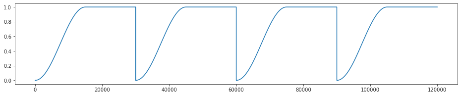
epochs = 1000
self.beta = beta_cycle_cosine(
n_iters=self.cfg.epochs * len(self.dl_trn),
n_cycles=8,
)
epe = endpoint_error(x, y)
epe.mean()
tensor(639.8550)
l2_loss = nn.MSELoss(reduction='none')
l2 = l2_loss(x, y)
l2 = torch.sum(l2, dim=[1, 2, 3])
l2.mean()
tensor(1447.9489)
torch.linalg.vector_norm(x, dim=[1, 2, 3]).pow(2)
tensor([747.6130, 733.6996, 740.8716, 821.3914, 702.4655, 705.5377, 723.1444,
742.3929, 658.3102, 703.7510, 732.7523, 736.1699, 809.8279, 682.5543,
743.1721, 660.1917, 782.0334, 698.3531, 739.7576, 722.3749, 771.1991,
684.5679, 741.9361, 675.1664, 732.5316, 721.4393, 732.4322, 749.3489,
721.2635, 672.3697, 752.2667, 737.1213, 717.1757, 747.0151, 714.4672,
714.2298, 665.7264, 777.5353, 796.2147, 738.8734, 628.1160, 725.2769,
750.9717, 778.9816, 699.5958, 781.1461, 793.3771, 723.9106, 704.1640,
683.0518, 729.7271, 769.2794, 669.2621, 750.7228, 677.2388, 732.4048,
691.7855, 690.3859, 745.3564, 646.2433, 729.8783, 718.5549, 646.8780,
701.3270, 678.5840, 711.5289, 648.5648, 717.2763, 695.7993, 751.0055,
722.3929, 734.4705, 712.4592, 716.6702, 803.1783, 642.2767, 770.4636,
688.1237, 694.9170, 679.9206, 670.6030, 688.1810, 700.1636, 778.9955,
743.0467, 766.1550, 727.5212, 797.4037, 782.4201, 774.1647, 674.7035,
713.1019, 775.7910, 671.4973, 737.4803, 754.2997, 746.4054, 691.6188,
723.6050, 664.3172, 725.8360, 675.2359, 739.5496, 710.3251, 701.6516,
726.2786, 766.2867, 708.5235, 790.4835, 702.7948, 764.7110, 763.9603,
791.8420, 701.0726, 736.9999, 697.5307, 752.4047, 668.8565, 723.0826,
802.7336, 735.0280, 737.1362, 764.4604, 756.4349, 664.6785, 667.6396,
703.7636, 687.4910])
l2_loss(x, torch.zeros_like(x)).sum(1).sum(1).sum(1)
tensor([747.6130, 733.6997, 740.8716, 821.3914, 702.4656, 705.5378, 723.1444,
742.3928, 658.3101, 703.7509, 732.7522, 736.1699, 809.8279, 682.5544,
743.1719, 660.1917, 782.0335, 698.3530, 739.7574, 722.3749, 771.1990,
684.5677, 741.9362, 675.1664, 732.5316, 721.4393, 732.4323, 749.3489,
721.2634, 672.3696, 752.2667, 737.1215, 717.1755, 747.0151, 714.4672,
714.2299, 665.7263, 777.5354, 796.2147, 738.8735, 628.1161, 725.2769,
750.9717, 778.9814, 699.5960, 781.1461, 793.3770, 723.9105, 704.1642,
683.0518, 729.7271, 769.2794, 669.2621, 750.7227, 677.2388, 732.4048,
691.7855, 690.3858, 745.3563, 646.2433, 729.8783, 718.5550, 646.8779,
701.3271, 678.5840, 711.5290, 648.5649, 717.2763, 695.7993, 751.0054,
722.3928, 734.4705, 712.4592, 716.6702, 803.1784, 642.2767, 770.4633,
688.1238, 694.9171, 679.9205, 670.6030, 688.1810, 700.1637, 778.9957,
743.0468, 766.1551, 727.5214, 797.4037, 782.4200, 774.1648, 674.7034,
713.1019, 775.7910, 671.4974, 737.4803, 754.2998, 746.4054, 691.6189,
723.6050, 664.3171, 725.8359, 675.2360, 739.5497, 710.3253, 701.6516,
726.2786, 766.2867, 708.5236, 790.4835, 702.7948, 764.7111, 763.9603,
791.8418, 701.0727, 736.9999, 697.5307, 752.4047, 668.8566, 723.0826,
802.7336, 735.0280, 737.1361, 764.4604, 756.4348, 664.6786, 667.6395,
703.7637, 687.4910])
torch.sqrt(l2.sum(1)).sum(-1).sum(-1)
tensor([629.6990, 653.1978, 628.2412, 641.8640, 655.3443, 642.1229, 652.9913,
622.5256, 621.0876, 615.0323, 644.8344, 626.6290, 689.1006, 623.5077,
656.3489, 661.4698, 628.4563, 615.3880, 650.4142, 630.4352, 653.6823,
608.5909, 644.6091, 609.4150, 632.9284, 638.7201, 648.2064, 644.2236,
643.3927, 607.4060, 649.6266, 635.3988, 621.8128, 649.2741, 640.6860,
657.6784, 630.2331, 638.2609, 664.0980, 660.4385, 623.5651, 630.1866,
656.7003, 678.3939, 629.5043, 636.9385, 667.6707, 614.3516, 626.7168,
640.0151, 641.6725, 670.6664, 606.5636, 663.6094, 617.7531, 622.8126,
636.7740, 638.4486, 650.4564, 632.2997, 649.5842, 671.8973, 646.3324,
641.7571, 629.8871, 659.0804, 614.2552, 643.0939, 652.9941, 643.0642,
621.7007, 655.7653, 626.8777, 658.2568, 630.8110, 617.2177, 634.2674,
627.7083, 627.6661, 613.2363, 641.1849, 612.5842, 631.1185, 640.7504,
638.0543, 661.9254, 614.7608, 662.5044, 667.1885, 637.8638, 596.9714,
637.7505, 644.5696, 644.1669, 637.9060, 635.4471, 672.5569, 636.0541,
673.1387, 615.7268, 639.2231, 617.7130, 628.0447, 628.7131, 646.4386,
638.4188, 670.7252, 643.9096, 628.8650, 635.2859, 643.0599, 658.5889,
654.1650, 629.9670, 654.2025, 631.9529, 646.2441, 605.1293, 647.6232,
661.0311, 666.1155, 682.5157, 685.8283, 646.4060, 602.3131, 610.8771,
666.1954, 611.7472])
mu = torch.randn((3, 8))
sigma = torch.randn((3, 8))
mu, sigma
(tensor([[ 0.1122, 0.5129, -0.4425, -2.1769, -0.8268, 0.1424, 1.5048, -1.4076],
[ 1.0724, 1.6425, -0.2142, 0.1953, -0.5890, -0.9897, 0.7150, -0.4424],
[-0.9415, -0.6545, 1.9329, 0.4982, -1.1759, -0.1427, 1.0383, 1.5114]]),
tensor([[-0.4936, -0.5728, 0.6749, -0.6792, -1.3159, 0.4215, -0.8694, 0.4871],
[ 0.2969, -0.7648, 0.4516, -0.1732, 1.0126, 0.8496, -0.5250, 0.8572],
[ 2.3984, -0.8545, -0.1391, 0.1293, -0.5360, -0.8622, 1.4206, -0.5930]]))
eps = mu.mul(0).normal_()
eps
tensor([[ 0.6877, -0.1969, 0.7380, -0.2097, -0.2244, 0.0326, -0.9199, -0.0609],
[-1.0349, -0.9747, -2.1280, -0.3248, 1.0452, 0.3964, 1.4942, -0.8744],
[-0.4584, 0.2539, -0.8111, -0.4586, 1.4671, -1.1485, -0.1303, -1.5311]])
eps = mu.mul(0).normal_().mul_(sigma)
z = eps.add(mu)
z
tensor([[-0.0821, -0.6124, 1.0330, -2.2054, -0.1948, 0.6712, 1.1051, -1.5058],
[ 1.1065, 1.7642, -0.7957, 0.2995, 0.3203, -1.0855, 0.8040, 0.8167],
[ 1.9699, -1.7382, 1.9173, 0.6727, -1.1518, 1.6261, 0.1960, 1.7798]])
eps
tensor([[-0.1943, -1.1253, 1.4755, -0.0286, 0.6320, 0.5287, -0.3997, -0.0982],
[ 0.0341, 0.1217, -0.5815, 0.1042, 0.9094, -0.0957, 0.0889, 1.2591],
[ 2.9114, -1.0838, -0.0157, 0.1744, 0.0242, 1.7688, -0.8423, 0.2685]])
def kl_coeff(step, total_step, constant_step, min_kl_coeff):
return max(min((step - constant_step) / total_step, 1.0), min_kl_coeff)
x = np.zeros(12000)
for i in range(len(x)):
x[i] = kl_coeff(i, 0.3 * 12000, 12000 * 0.1, 0.123)
plt.plot(x)
[<matplotlib.lines.Line2D at 0x7f95cb174100>]
self = tr = TrainerVAE(VAE(ConfigVAE(full=True)), ConfigTrain())
def beta_cycle_cosine(
n_iters: int,
start: float = 0.0,
stop: float = 1.0,
n_cycles: int = 4,
ratio: float = 0.5,
min_beta: float = 1e-4, ):
period = n_iters / n_cycles
step = (stop-start) / (period*ratio)
beta = np.ones(n_iters)
for c in range(n_cycles):
v, i = start, 0
while v <= stop:
idx = int(i+c*period)
val = 0.5 * (1 - np.cos(v*np.pi))
beta[idx] = val
v += step
i += 1
beta[beta < min_beta] = min_beta
return beta
self.beta = beta_cycle_cosine(
n_iters=self.cfg.epochs * len(self.dl_trn),
n_cycles=8,
)
plt.plot(self.beta)
[<matplotlib.lines.Line2D at 0x7ff4bbef1370>]
ret = []
for epoch in tqdm(range(self.cfg.epochs)):
for i in range(len(self.dl_trn)):
gstep = epoch * len(self.dl_trn) + i
beta = self.beta[gstep]
ret.append(beta)
gstep
77999
len(self.beta)
78000
self.beta[1]
0.0001
plt.plot(self.beta)
[<matplotlib.lines.Line2D at 0x7ff4c4391820>]
plt.plot(ret)
[<matplotlib.lines.Line2D at 0x7ff4c42afca0>]
normalized_samples = torch.randn((13, 8))
sigma = torch.exp(torch.randn((13, 8)))
log_p = (
- 0.5 * normalized_samples ** 2
- 0.5 * np.log(2 * np.pi)
- torch.log(sigma)
)
log_p
tensor([[-2.3694, -1.8308, -0.7791, 1.5293, -1.2713, -0.9764, -5.1608, -1.4846],
[-1.5922, -2.3925, -2.3156, -1.7605, -0.2739, -1.1759, -0.9048, -0.9694],
[-2.7857, -0.4068, -0.0667, -1.5675, -0.3610, -1.2282, -0.7611, -2.7479],
[ 0.0368, -1.9140, -1.3561, -0.4028, -0.9015, -1.4530, -0.2992, -2.1914],
[-0.6287, -1.6673, -1.4189, -1.7333, -0.7851, -3.1374, -1.7657, -0.5307],
[-4.8624, 0.9339, -0.2831, -1.4632, -3.4493, -2.6331, 1.9343, -2.3632],
[-0.0230, -1.1072, -0.4629, -2.0903, -0.8332, -1.1019, 0.3970, -0.8058],
[-0.0238, -3.4209, -3.4497, 0.5201, -3.4146, -2.5076, 1.1838, -2.0311],
[-2.7138, -1.5885, -1.0503, 0.0257, -2.6728, -1.8120, -3.0322, -0.1518],
[-2.5873, -0.6933, -1.4812, -2.1539, -2.0399, -2.7781, -0.8052, -2.7126],
[-0.3526, -1.4791, -0.6418, -0.8165, 0.3287, -2.3885, -0.9162, -0.9316],
[-0.7125, -3.2995, -1.5600, -1.3643, -1.4540, -2.0953, -1.3327, -2.2483],
[-1.0298, -2.8014, -1.5791, -3.4768, -0.3710, -2.0971, -0.3657, -2.4331]])
torch.log(sigma)
tensor([[ 0.3591, nan, -0.9571, -1.5177, nan, -1.6382, nan, 0.7242],
[ nan, nan, nan, nan, nan, nan, nan, nan],
[-1.1607, 0.9695, -0.2184, nan, -0.3224, 1.0160, nan, nan],
[ 0.0538, -1.8930, 0.2184, nan, 0.0590, nan, nan, nan],
[ 0.5252, nan, nan, nan, 0.7673, nan, -1.3828, nan],
[ 1.0148, -0.9996, nan, -0.2135, nan, nan, nan, -0.2802],
[ nan, nan, -6.1357, 0.8372, nan, nan, -0.2296, -0.7223],
[-0.4775, -1.4117, nan, nan, -3.3619, nan, nan, -4.3732],
[ 0.5700, nan, nan, -0.7747, nan, nan, nan, nan],
[ nan, nan, 0.2162, nan, nan, nan, nan, 0.2508],
[ nan, -1.1528, nan, -1.0758, 0.5026, nan, nan, -1.9246],
[-3.1981, -1.7408, nan, nan, 0.4714, nan, nan, nan],
[ nan, nan, -0.0857, nan, -1.0891, -0.6045, nan, nan]])
from torch.distributions import Normal
from torch.distributions.kl import kl_divergence
q = Normal(nn.Parameter(torch.randn((3, 4))), nn.Parameter(torch.randn((3, 4)).exp()))
p = Normal(nn.Parameter(torch.randn((3, 4))), nn.Parameter(torch.randn((3, 4)).exp()))
kl_true = kl_divergence(q, p)
kl_true
tensor([[ 1.4999, 1.4784, 75.8491, 0.1995],
[ 8.5944, 67.7283, 1.8588, 0.3194],
[ 4.4265, 12.1696, 2.1257, 1.4096]], grad_fn=<MulBackward0>)
q.log_prob(torch.randn(3, 4))
tensor([[-1.8109, -9.1943, -1.4652, -1.8974],
[-1.9089, -2.0395, -3.1550, -3.9428],
[-5.3129, -2.1137, -0.5710, -6.5973]], grad_fn=<SubBackward0>)
q.rsample()
tensor([[ 1.9614, -0.2400, 1.9580, 1.4346],
[ 2.3863, 2.5389, 0.5869, 1.3907],
[ 1.2806, 2.2005, -0.4789, 0.4627]], grad_fn=<AddBackward0>)
qq = Normal2(q.mean, q.variance.log())
pp = Normal2(p.mean, p.variance.log())
qq.kl(pp)
tensor([[9.7541e+00, 3.4058e+00, 8.8346e+03, 4.2316e-01],
[1.3991e+02, 3.6020e+03, 2.6195e+00, 5.0918e-01],
[3.0792e+00, 4.0543e+02, 4.0167e+00, 2.6629e+00]],
grad_fn=<SubBackward0>)
qq.kl_hadi(pp)
tensor([[ 1.4995, 1.4760, 75.2751, 0.1994],
[ 8.5855, 67.5560, 1.8583, 0.3192],
[ 4.4225, 12.1520, 2.1221, 1.4085]], grad_fn=<MulBackward0>)
class Normal2:
def __init__(
self,
mu: torch.Tensor,
logsigma: torch.Tensor,
temp: float = 1.0,
seed: int = None,
):
self.mu = soft_clamp(mu)
logsigma = soft_clamp(logsigma)
self.sigma = torch.exp(logsigma) # + 1e-2
# we don't need above after soft clamp (?)
if temp != 1.0:
self.sigma *= temp
if seed is not None:
self.rng = torch.Generator()
self.rng.manual_seed(seed)
else:
self.rng = None
def sample(self):
return sample_normal(self.mu, self.sigma, self.rng)
def log_p(self, samples: torch.Tensor):
normalized_samples = (samples - self.mu) / self.sigma
log_p = (
- 0.5 * normalized_samples ** 2
- 0.5 * np.log(2 * np.pi)
- torch.log(self.sigma)
)
return log_p
def kl(self, normal_dist):
term1 = (self.mu - normal_dist.mu) / normal_dist.sigma
term2 = self.sigma / normal_dist.sigma
return 0.5 * (term1 ** 2 + term2 ** 2) - 0.5 - torch.log(term2)
def kl_hadi(self, p):
delta_mu = self.mu - p.mu
delta_sigma = self.sigma / p.sigma
return 0.5 * (
delta_sigma -
torch.log(delta_sigma) +
delta_mu ** 2 / p.sigma -
1
)
def soft_clamp(x: torch.Tensor, c: float = 50.0):
return x.div(c).tanh_().mul(c)
self = tr = TrainerVAE(VAE(ConfigVAE()), ConfigTrain(batch_size=128))
x, norm = next(iter(tr.dl_trn))
x, norm = tr.to([x, norm])
y, _, log_q, log_p, kl_all, kl_diag = tr.model(x)
loss_recon = endpoint_error(
true=x, pred=y, w=1/norm)
loss_recon
tensor([ 45.4377, 205.4288, 46.5688, 59.2610, 49.0402, 71.2847, 73.4616,
61.2706, 54.1703, 102.6177, 64.6650, 49.5783, 56.0723, 55.1371,
74.4011, 175.9845, 49.9946, 53.6751, 59.3473, 66.1611, 49.1458,
63.2466, 57.1993, 55.0466, 58.2670, 52.8819, 53.5533, 58.4538,
143.5602, 74.1172, 102.1183, 71.7040, 64.8274, 57.0710, 55.0423,
50.3285, 282.2430, 61.9622, 97.2113, 65.9979, 49.9359, 76.7833,
52.9420, 64.0103, 60.7069, 46.8805, 50.1055, 180.3509, 50.5020,
110.2339, 65.4224, 106.2291, 67.5172, 53.7452, 48.5706, 83.1084,
60.4647, 50.1841, 60.6372, 50.0537, 56.9153, 47.4792, 52.3995,
48.9703, 153.9743, 58.5689, 50.9976, 63.0951, 50.6682, 55.6268,
46.0520, 76.8719, 48.9700, 49.2673, 49.3223, 67.7599, 85.2331,
49.7888, 53.9074, 74.2478, 55.2077, 49.4101, 447.6043, 73.3690,
60.8083, 50.5836, 47.3349, 45.3234, 51.6444, 45.2281, 50.4865,
54.5259, 75.4010, 57.7934, 42.5107, 49.9706, 53.0802, 86.5955,
48.5104, 47.6407, 55.0177, 50.2107, 66.7259, 47.1115, 98.3715,
53.5539, 59.0969, 63.4661, 49.4213, 85.3337, 56.8748, 57.1412,
53.8689, 56.5536, 51.6285, 53.5528, 49.9825, 55.2285, 51.9671,
49.9400, 55.7655, 186.2380, 169.9028, 47.5370, 57.6568, 61.6357,
313.1137, 48.3932], grad_fn=<DivBackward0>)
gstep = 50
alpha = kl_balancer_coeff(
groups=self.model.cfg.groups,
device=self.device,
fun='square',
)
alpha
tensor([1., 2., 2., 4., 4., 4., 4.])
beta = kl_coeff(
step=gstep,
total_step=self.cfg.kl_anneal_portion * 500 * len(self.dl_trn),
constant_step=self.cfg.kl_const_portion * 500 * len(self.dl_trn),
min_kl_coeff=self.cfg.kl_const_coeff,
)
balanced_kl, kl_coeffs, kl_vals = kl_balancer(
kl_all=kl_all, coeff=beta, alpha=alpha)
balanced_kl
tensor([0.0031, 0.0007, 0.0015, 0.0008, 0.0024, 0.0007, 0.0011, 0.0009, 0.0009,
0.0017, 0.0008, 0.0012, 0.0016, 0.0010, 0.0008, 0.0007, 0.0009, 0.0030,
0.0010, 0.0008, 0.0023, 0.0008, 0.0009, 0.0036, 0.0011, 0.0011, 0.0023,
0.0015, 0.0008, 0.0007, 0.0009, 0.0008, 0.0010, 0.0020, 0.0012, 0.0010,
0.0007, 0.0025, 0.0008, 0.0008, 0.0009, 0.0007, 0.0009, 0.0011, 0.0009,
0.0009, 0.0010, 0.0011, 0.0012, 0.0007, 0.0011, 0.0008, 0.0008, 0.0009,
0.0010, 0.0007, 0.0036, 0.0057, 0.0010, 0.0013, 0.0008, 0.0072, 0.0007,
0.0009, 0.0008, 0.0011, 0.0009, 0.0007, 0.0010, 0.0010, 0.0013, 0.0009,
0.0011, 0.0011, 0.0012, 0.0023, 0.0006, 0.0011, 0.0017, 0.0008, 0.0012,
0.0013, 0.0007, 0.0013, 0.0008, 0.0008, 0.0016, 0.0016, 0.0011, 0.0010,
0.0014, 0.0018, 0.0007, 0.0010, 0.0015, 0.0010, 0.0010, 0.0008, 0.0013,
0.0011, 0.0009, 0.0030, 0.0007, 0.0020, 0.0008, 0.0009, 0.0014, 0.0011,
0.0015, 0.0017, 0.0009, 0.0008, 0.0008, 0.0009, 0.0018, 0.0022, 0.0018,
0.0024, 0.0010, 0.0015, 0.0008, 0.0008, 0.0008, 0.0019, 0.0008, 0.0008,
0.0009, 0.0020], grad_fn=<MulBackward0>)
plt.plot(to_np(sum(kl_all)))
[<matplotlib.lines.Line2D at 0x7fdf5af40550>]
plt.plot(to_np(balanced_kl))
[<matplotlib.lines.Line2D at 0x7fdf5aef2310>]
nelbo_batch = loss_recon + balanced_kl
nelbo_batch
tensor([ 45.4408, 205.4296, 46.5703, 59.2619, 49.0426, 71.2854, 73.4627,
61.2715, 54.1712, 102.6193, 64.6658, 49.5795, 56.0738, 55.1382,
74.4020, 175.9852, 49.9955, 53.6781, 59.3482, 66.1618, 49.1480,
63.2473, 57.2003, 55.0502, 58.2681, 52.8830, 53.5556, 58.4553,
143.5609, 74.1179, 102.1192, 71.7048, 64.8285, 57.0730, 55.0434,
50.3296, 282.2437, 61.9647, 97.2121, 65.9987, 49.9368, 76.7840,
52.9429, 64.0114, 60.7078, 46.8815, 50.1065, 180.3520, 50.5032,
110.2346, 65.4235, 106.2299, 67.5181, 53.7461, 48.5716, 83.1091,
60.4683, 50.1898, 60.6383, 50.0550, 56.9161, 47.4864, 52.4002,
48.9713, 153.9751, 58.5700, 50.9985, 63.0958, 50.6692, 55.6278,
46.0533, 76.8728, 48.9712, 49.2684, 49.3235, 67.7621, 85.2338,
49.7899, 53.9092, 74.2486, 55.2089, 49.4114, 447.6050, 73.3703,
60.8091, 50.5844, 47.3365, 45.3251, 51.6455, 45.2290, 50.4879,
54.5276, 75.4016, 57.7944, 42.5123, 49.9715, 53.0812, 86.5963,
48.5118, 47.6418, 55.0186, 50.2137, 66.7266, 47.1135, 98.3723,
53.5548, 59.0984, 63.4673, 49.4228, 85.3354, 56.8757, 57.1420,
53.8697, 56.5546, 51.6303, 53.5550, 49.9842, 55.2309, 51.9681,
49.9415, 55.7663, 186.2387, 169.9036, 47.5389, 57.6576, 61.6365,
313.1146, 48.3952], grad_fn=<AddBackward0>)
loss = torch.mean(nelbo_batch)
loss
tensor(72.4572, grad_fn=<MeanBackward0>)
nelbo_batch = loss_recon.sum() + balanced_kl
nelbo_batch
tensor([9274.3564, 9274.3545, 9274.3555, 9274.3545, 9274.3555, 9274.3545,
9274.3545, 9274.3545, 9274.3545, 9274.3555, 9274.3545, 9274.3545,
9274.3555, 9274.3545, 9274.3545, 9274.3545, 9274.3545, 9274.3564,
9274.3545, 9274.3545, 9274.3555, 9274.3545, 9274.3545, 9274.3574,
9274.3545, 9274.3545, 9274.3555, 9274.3555, 9274.3545, 9274.3545,
9274.3545, 9274.3545, 9274.3545, 9274.3555, 9274.3545, 9274.3545,
9274.3545, 9274.3564, 9274.3545, 9274.3545, 9274.3545, 9274.3545,
9274.3545, 9274.3545, 9274.3545, 9274.3545, 9274.3545, 9274.3545,
9274.3545, 9274.3545, 9274.3545, 9274.3545, 9274.3545, 9274.3545,
9274.3545, 9274.3545, 9274.3574, 9274.3594, 9274.3545, 9274.3545,
9274.3545, 9274.3604, 9274.3545, 9274.3545, 9274.3545, 9274.3545,
9274.3545, 9274.3545, 9274.3545, 9274.3545, 9274.3545, 9274.3545,
9274.3545, 9274.3545, 9274.3545, 9274.3555, 9274.3545, 9274.3545,
9274.3555, 9274.3545, 9274.3545, 9274.3545, 9274.3545, 9274.3545,
9274.3545, 9274.3545, 9274.3555, 9274.3555, 9274.3545, 9274.3545,
9274.3545, 9274.3555, 9274.3545, 9274.3545, 9274.3555, 9274.3545,
9274.3545, 9274.3545, 9274.3545, 9274.3545, 9274.3545, 9274.3564,
9274.3545, 9274.3555, 9274.3545, 9274.3545, 9274.3545, 9274.3545,
9274.3555, 9274.3555, 9274.3545, 9274.3545, 9274.3545, 9274.3545,
9274.3555, 9274.3555, 9274.3555, 9274.3555, 9274.3545, 9274.3555,
9274.3545, 9274.3545, 9274.3545, 9274.3555, 9274.3545, 9274.3545,
9274.3545, 9274.3555], grad_fn=<AddBackward0>)
loss = torch.mean(nelbo_batch)
loss
tensor(9274.3555, grad_fn=<MeanBackward0>)
tr.cfg.epochs
1000
tr.cfg.eval_freq
5
epoch = 123
n_iters = len(tr.dl_trn)
global_step
38688
x, norm = next(iter(tr.dl_vld))
err = endpoint_error(x, 0, None)
err.shape
torch.Size([128])
err
tensor([132.5975, 53.5925, 72.4799, 145.3036, 85.0255, 84.6349, 96.5781,
86.5584, 144.9209, 20.2190, 13.6957, 65.5549, 84.1360, 23.9441,
49.3298, 14.5331, 127.2233, 87.9757, 68.8804, 108.8885, 79.6087,
98.4160, 105.2094, 37.8709, 264.2548, 132.5681, 119.2118, 73.0115,
150.9497, 25.5428, 19.6858, 8.9699, 136.4348, 36.9607, 40.8509,
138.7265, 94.4150, 106.9915, 110.2774, 59.0889, 124.1433, 146.8308,
153.7984, 66.0192, 1.7087, 59.2007, 139.8999, 152.8509, 127.4156,
75.5292, 21.4601, 125.9101, 101.0888, 110.9665, 73.3013, 105.1366,
151.7934, 49.2825, 104.6970, 69.5208, 87.4045, 142.3419, 19.5908,
20.4876, 20.6781, 43.9582, 104.0770, 67.6602, 106.2190, 127.8443,
98.9768, 154.5563, 38.7343, 115.4509, 76.6932, 72.1344, 66.3664,
88.6815, 52.6462, 38.5949, 17.4678, 116.8431, 82.2381, 131.3993,
57.6906, 133.3196, 53.7212, 124.5322, 95.5550, 52.3498, 36.9263,
31.7852, 97.1418, 60.9655, 86.7127, 114.0238, 87.7237, 22.7698,
27.0477, 59.2489, 87.5168, 33.6770, 89.6450, 32.1166, 11.9542,
93.6231, 145.4872, 76.8097, 86.5020, 82.7848, 64.2317, 108.0897,
126.6873, 76.0455, 62.2337, 154.4279, 86.8769, 93.7090, 160.1859,
32.2572, 65.2180, 70.7143, 87.0055, 18.2286, 48.6891, 120.1660,
136.0816, 130.8057], dtype=torch.float64)
norm
tensor([132.5975, 53.5925, 72.4799, 145.3036, 85.0255, 84.6349, 96.5781,
86.5584, 144.9209, 20.2190, 13.6957, 65.5549, 84.1360, 23.9441,
49.3298, 14.5331, 127.2233, 87.9757, 68.8804, 108.8885, 79.6087,
98.4160, 105.2094, 37.8709, 264.2548, 132.5681, 119.2118, 73.0115,
150.9497, 25.5428, 19.6858, 8.9699, 136.4348, 36.9607, 40.8509,
138.7265, 94.4150, 106.9915, 110.2774, 59.0889, 124.1433, 146.8308,
153.7984, 66.0192, 1.7087, 59.2007, 139.8999, 152.8509, 127.4156,
75.5292, 21.4601, 125.9101, 101.0888, 110.9665, 73.3013, 105.1366,
151.7934, 49.2825, 104.6970, 69.5208, 87.4045, 142.3419, 19.5908,
20.4876, 20.6781, 43.9582, 104.0770, 67.6602, 106.2190, 127.8443,
98.9768, 154.5563, 38.7343, 115.4509, 76.6932, 72.1344, 66.3664,
88.6815, 52.6462, 38.5949, 17.4678, 116.8431, 82.2381, 131.3993,
57.6906, 133.3196, 53.7212, 124.5322, 95.5550, 52.3498, 36.9263,
31.7852, 97.1418, 60.9655, 86.7127, 114.0238, 87.7237, 22.7698,
27.0477, 59.2489, 87.5168, 33.6770, 89.6450, 32.1166, 11.9542,
93.6231, 145.4872, 76.8097, 86.5020, 82.7848, 64.2317, 108.0897,
126.6873, 76.0455, 62.2337, 154.4279, 86.8769, 93.7090, 160.1859,
32.2572, 65.2180, 70.7143, 87.0055, 18.2286, 48.6891, 120.1660,
136.0816, 130.8057], dtype=torch.float64)
endpoint_error(x, 0, 1/norm)
tensor([44.0473, 44.0473, 44.0473, 44.0473, 44.0473, 44.0473, 44.0473, 44.0473,
44.0473, 44.0473, 44.0473, 44.0473, 44.0473, 44.0473, 44.0473, 44.0473,
44.0473, 44.0473, 44.0473, 44.0473, 44.0473, 44.0473, 44.0473, 44.0473,
44.0473, 44.0473, 44.0473, 44.0473, 44.0473, 44.0473, 44.0473, 44.0473,
44.0473, 44.0473, 44.0473, 44.0473, 44.0473, 44.0473, 44.0473, 44.0473,
44.0473, 44.0473, 44.0473, 44.0473, 44.0473, 44.0473, 44.0473, 44.0473,
44.0473, 44.0473, 44.0473, 44.0473, 44.0473, 44.0473, 44.0473, 44.0473,
44.0473, 44.0473, 44.0473, 44.0473, 44.0473, 44.0473, 44.0473, 44.0473,
44.0473, 44.0473, 44.0473, 44.0473, 44.0473, 44.0473, 44.0473, 44.0473,
44.0473, 44.0473, 44.0473, 44.0473, 44.0473, 44.0473, 44.0473, 44.0473,
44.0473, 44.0473, 44.0473, 44.0473, 44.0473, 44.0473, 44.0473, 44.0473,
44.0473, 44.0473, 44.0473, 44.0473, 44.0473, 44.0473, 44.0473, 44.0473,
44.0473, 44.0473, 44.0473, 44.0473, 44.0473, 44.0473, 44.0473, 44.0473,
44.0473, 44.0473, 44.0473, 44.0473, 44.0473, 44.0473, 44.0473, 44.0473,
44.0473, 44.0473, 44.0473, 44.0473, 44.0473, 44.0473, 44.0473, 44.0473,
44.0473, 44.0473, 44.0473, 44.0473, 44.0473, 44.0473, 44.0473, 44.0473],
dtype=torch.float64)
def endpoint_error(
true: torch.Tensor,
pred: torch.Tensor,
w: torch.Tensor = None,
batch_size: int = None,
dim: int = 1, ):
delta = true - pred
if batch_size is None:
error = torch.linalg.norm(delta, dim=dim)
else:
error = []
n = int(np.ceil(len(true) / batch_size))
for i in range(n):
a = i * batch_size
b = min((i+1) * batch_size, len(true))
error.append(torch.linalg.norm(
delta[range(a, b)], dim=dim,
))
error = torch.cat(error)
error = torch.sum(error, dim=[1, 2])
if w is not None:
error = error * w / w.mean()
return error
(1 / norm) / (1 / norm).mean()
tensor([ 0.3322, 0.8219, 0.6077, 0.3031, 0.5180, 0.5204, 0.4561, 0.5089,
0.3039, 2.1785, 3.2161, 0.6719, 0.5235, 1.8396, 0.8929, 3.0308,
0.3462, 0.5007, 0.6395, 0.4045, 0.5533, 0.4476, 0.4187, 1.1631,
0.1667, 0.3323, 0.3695, 0.6033, 0.2918, 1.7244, 2.2375, 4.9106,
0.3228, 1.1917, 1.0782, 0.3175, 0.4665, 0.4117, 0.3994, 0.7454,
0.3548, 0.3000, 0.2864, 0.6672, 25.7780, 0.7440, 0.3148, 0.2882,
0.3457, 0.5832, 2.0525, 0.3498, 0.4357, 0.3969, 0.6009, 0.4190,
0.2902, 0.8938, 0.4207, 0.6336, 0.5039, 0.3094, 2.2484, 2.1499,
2.1301, 1.0020, 0.4232, 0.6510, 0.4147, 0.3445, 0.4450, 0.2850,
1.1372, 0.3815, 0.5743, 0.6106, 0.6637, 0.4967, 0.8367, 1.1413,
2.5216, 0.3770, 0.5356, 0.3352, 0.7635, 0.3304, 0.8199, 0.3537,
0.4610, 0.8414, 1.1928, 1.3858, 0.4534, 0.7225, 0.5080, 0.3863,
0.5021, 1.9345, 1.6285, 0.7434, 0.5033, 1.3079, 0.4914, 1.3715,
3.6847, 0.4705, 0.3028, 0.5735, 0.5092, 0.5321, 0.6858, 0.4075,
0.3477, 0.5792, 0.7078, 0.2852, 0.5070, 0.4700, 0.2750, 1.3655,
0.6754, 0.6229, 0.5063, 2.4164, 0.9047, 0.3666, 0.3237, 0.3367],
dtype=torch.float64)
m = DeConv2D(5, 5, 8, normalize_dim=1, groups=5)
z = torch.randn(13, 5, 1, 1)
m(z).size()
torch.Size([13, 5, 8, 8])
m.weight.size()
torch.Size([5, 1, 8, 8])
m.log_weight_norm
Parameter containing:
tensor([0.2400], requires_grad=True)
m.w.size()
torch.Size([5, 1, 8, 8])
vae = VAE(ConfigVAE())
tr = TrainerVAE(vae, ConfigTrain(), 'cuda')
vars(vae.cfg)
{'n_kers': 4,
'n_rots': 8,
'ker_sz': 4,
'input_sz': 19,
'n_pre_cells': 3,
'n_pre_blocks': 0,
'n_post_cells': 3,
'n_post_blocks': 1,
'n_latent_scales': 3,
'n_groups_per_scale': 4,
'n_latent_per_group': 5,
'n_cells_per_cond': 2,
'spectral_norm': True,
'rot_equiv': False,
'compress': True,
'use_bn': False,
'groups': [4, 2, 1],
'base_dir': '/home/hadi/Documents/MTMST',
'results_dir': '/home/hadi/Documents/MTMST/results',
'runs_dir': '/home/hadi/Documents/MTMST/runs/k-32_z-5x[4,2,1]_post-1x3_cmprs',
'save_dir': '/home/hadi/Documents/MTMST/models/k-32_z-5x[4,2,1]_post-1x3_cmprs',
'data_dir': '/home/hadi/Documents/MTMST/data',
'h_file': '/home/hadi/Documents/MTMST/data/MTLFP_tres25.h5',
'h_pre': '/home/hadi/Documents/MTMST/data/simulation_dim-19_5e+04.h5',
'seed': 0,
'activation_fn': 'swish',
'n_power_iter': 5,
'residual_kl': True,
'ada_groups': True,
'use_se': True}
vars(tr.cfg)
{'lr': 0.1,
'epochs': 1000,
'batch_size': 512,
'warmup_portion': 0.1,
'lambda_init': 10,
'lambda_norm': 0.01,
'lambda_anneal': False,
'kl_const_coeff': 0.0001,
'kl_const_portion': 0.0001,
'kl_anneal_portion': 0.3,
'optimizer': 'adamax',
'optimizer_kws': {'betas': (0.9, 0.999),
'weight_decay': 0.0003,
'eps': 1e-08},
'scheduler_type': 'cosine',
'scheduler_kws': {'T_max': 899.0, 'eta_min': 0.0001},
'balanced_recon': True,
'spectral_reg': False,
'clip_grad': None,
'chkpt_freq': 10,
'eval_freq': 5,
'log_freq': 2}
vae.print()
vae.scales
+-------------+------------+ | Module Name | Num Params | +-------------+------------+ | VAE | 2.6 Mil | | --- | --- | | stem | 1.1 K | | pre | 0 | | enc_tower | 1.4 Mil | | enc_sampler | 430.5 K | | dec_sampler | 409.9 K | | expand | 5.9 K | | dec_tower | 361.9 K | | post | 10.3 K | | out | 290 | +-------------+------------+
[16, 8, 4]
len(vae.all_conv_layers), len(vae.all_log_norm)
(94, 94)
all_norm = torch.cat(vae.all_log_norm)
all_norm = torch.exp(all_norm)
sns.histplot(to_np(all_norm));
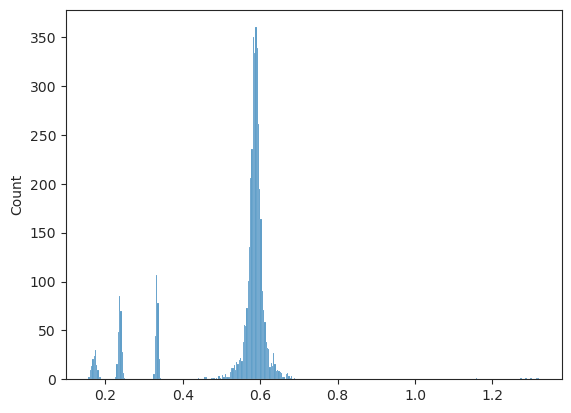
sum([len(e) for e in tr.model.all_log_norm])
4199
def _cond(global_step, n_iter, freq: int = 4000):
a = global_step // freq
b = (global_step - n_iter) // freq
return a - b == 1
for epoch in range(1000):
global_step = (epoch + 1) * n_iters
if _cond(global_step, len(tr.dl_trn)):
print(global_step)
4056
8034
12012
16068
20046
24024
28002
32058
36036
40014
44070
48048
52026
56004
60060
64038
68016
72072
76050
Review train options#
vars(tr.cfg)
{'lr': 0.1,
'epochs': 5000,
'batch_size': 512,
'warmup_epochs': 500,
'lambda_init': 10,
'lambda_norm': 0.01,
'lambda_anneal': False,
'kl_const_coeff': 0.0001,
'kl_const_portion': 0.0001,
'kl_anneal_portion': 0.3,
'optimizer': 'adamax',
'optimizer_kws': {'betas': (0.9, 0.999),
'weight_decay': 0.0003,
'eps': 1e-08},
'scheduler_type': 'cosine',
'scheduler_kws': {'T_max': 4499.0, 'eta_min': 0.0001},
'balanced_recon': True,
'clip_grad': None,
'chkpt_freq': 10,
'eval_freq': 5,
'log_freq': 2}
Train#
tr.train(comment='b512-lr0.1_spectral:reg')
epoch # 5000, avg loss: 0.662515: 100%|██████████| 5000/5000 [5:18:23<00:00, 3.82s/it]
all_norm = [torch.exp(n.ravel()) for n in vae.all_log_norm]
all_norm = to_np(torch.cat(all_norm))
sns.histplot(all_norm, bins=np.linspace(0, 5, 101));
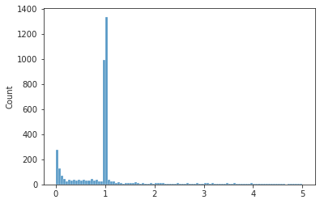
np.max(all_norm), (all_norm > 5).sum() / len(all_norm)
(66.75848, 0.08049965301873699)
vae.eval();
x, norm = next(iter(tr.dl_vld))
x, norm = tr.to([x, norm])
with torch.no_grad():
y, z, log_p, log_q, kl_all, kl_diag = vae(x)
_ = show_opticflow(y)
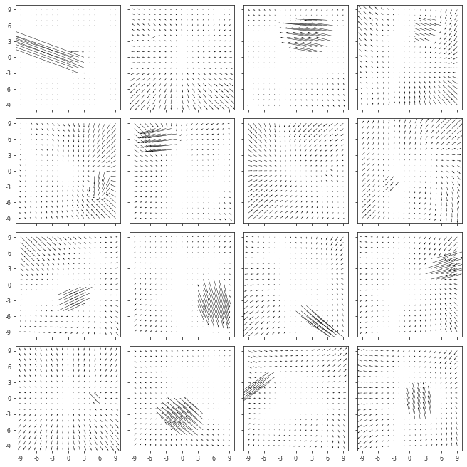
_ = show_opticflow(x)
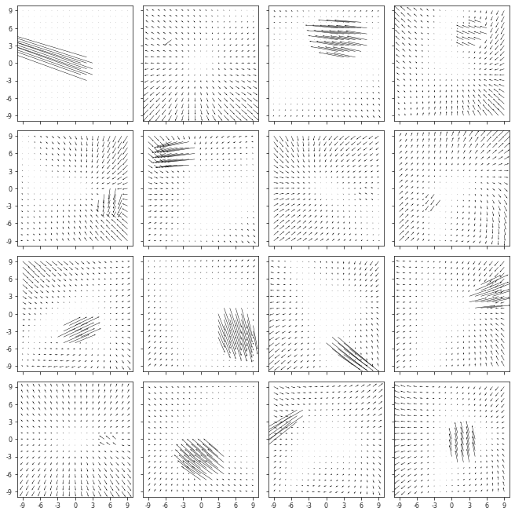
_ = show_opticflow_full(x[1])
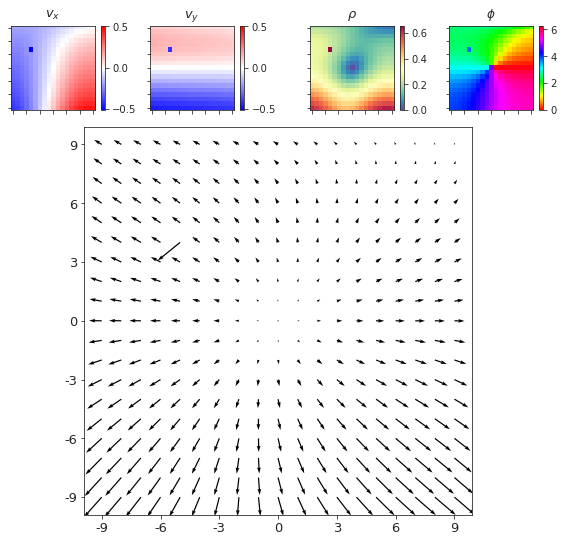
_ = show_opticflow_full(y[1])
x, _ = tr.dl_vld.dataset[1]
_ = show_opticflow_full(x)
ff = h5py.File(vae.cfg.h_pre)
x = np.array(ff['vld']['x'])[1]
_ = show_opticflow_full(x)
np.array(ff['vld']['fix'])[1]
array([-0.1983603 , 0.77034186])
np.array(ff['vld']['vel_slf'])[:, 1], np.array(ff['vld']['vel_obj'])[:, 1], np.array(ff['vld']['pos_obj'])[:, 1]
(array([-0.29326528, 0.38819782, 0.44032602]),
array([-0.58997992, -1.05976248, 0.47420269]),
array([-1.06814914, 1.62296915, 0.84527033]))
with torch.no_grad():
y_sample, z_sample = vae.sample(1024, 1, device=tr.device)
_ = show_opticflow(y_sample)
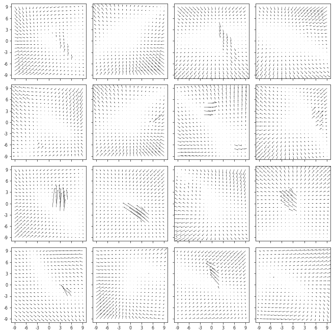
norm_sample = sp_lin.norm(to_np(y_sample), axis=-1).mean(-1).mean(-1)
sns.histplot(norm_sample);
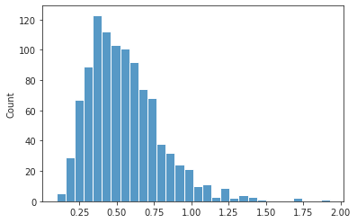
to_np(torch.linalg.vector_norm(vae.stem.weight, dim=[1, 2, 3]))
array([0.9960772 , 0.99464476, 0.9761043 , 0.98463345], dtype=float32)
w = to_np(vae.stem.weight)
w.shape
(4, 2, 4, 4)
_ = show_opticflow(w, 2, figsize=(5, 5), tick_spacing=1)
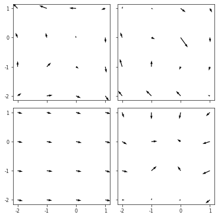
_ = show_opticflow_full(w[3], tick_spacing=1)
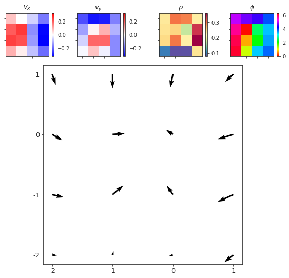
vae.enc0
Sequential(
(0): ELU(alpha=1.0, inplace=True)
(1): ParametrizedConv2D(
128, 128, kernel_size=(1, 1), stride=(1, 1)
(parametrizations): ModuleDict(
(weight): ParametrizationList(
(0): _SpectralNorm()
)
)
)
(2): ELU(alpha=1.0, inplace=True)
)
vae.enc_sampler
ModuleList(
(0): Sequential(
(0): Flatten(start_dim=1, end_dim=-1)
(1): ParametrizedLinear(
in_features=2048, out_features=20, bias=True
(parametrizations): ModuleDict(
(weight): ParametrizationList(
(0): _SpectralNorm()
)
)
)
)
(1): Sequential(
(0): Flatten(start_dim=1, end_dim=-1)
(1): ParametrizedLinear(
in_features=4096, out_features=20, bias=True
(parametrizations): ModuleDict(
(weight): ParametrizationList(
(0): _SpectralNorm()
)
)
)
)
(2): Sequential(
(0): Flatten(start_dim=1, end_dim=-1)
(1): ParametrizedLinear(
in_features=4096, out_features=20, bias=True
(parametrizations): ModuleDict(
(weight): ParametrizationList(
(0): _SpectralNorm()
)
)
)
)
(3): Sequential(
(0): Flatten(start_dim=1, end_dim=-1)
(1): ParametrizedLinear(
in_features=8192, out_features=20, bias=True
(parametrizations): ModuleDict(
(weight): ParametrizationList(
(0): _SpectralNorm()
)
)
)
)
(4): Sequential(
(0): Flatten(start_dim=1, end_dim=-1)
(1): ParametrizedLinear(
in_features=8192, out_features=20, bias=True
(parametrizations): ModuleDict(
(weight): ParametrizationList(
(0): _SpectralNorm()
)
)
)
)
(5): Sequential(
(0): Flatten(start_dim=1, end_dim=-1)
(1): ParametrizedLinear(
in_features=8192, out_features=20, bias=True
(parametrizations): ModuleDict(
(weight): ParametrizationList(
(0): _SpectralNorm()
)
)
)
)
(6): Sequential(
(0): Flatten(start_dim=1, end_dim=-1)
(1): ParametrizedLinear(
in_features=8192, out_features=20, bias=True
(parametrizations): ModuleDict(
(weight): ParametrizationList(
(0): _SpectralNorm()
)
)
)
)
)
vae.dec_sampler
ModuleList(
(0): Sequential(
(0): Flatten(start_dim=1, end_dim=-1)
(1): ELU(alpha=1.0, inplace=True)
(2): ParametrizedLinear(
in_features=4096, out_features=20, bias=True
(parametrizations): ModuleDict(
(weight): ParametrizationList(
(0): _SpectralNorm()
)
)
)
)
(1): Sequential(
(0): Flatten(start_dim=1, end_dim=-1)
(1): ELU(alpha=1.0, inplace=True)
(2): ParametrizedLinear(
in_features=4096, out_features=20, bias=True
(parametrizations): ModuleDict(
(weight): ParametrizationList(
(0): _SpectralNorm()
)
)
)
)
(2): Sequential(
(0): Flatten(start_dim=1, end_dim=-1)
(1): ELU(alpha=1.0, inplace=True)
(2): ParametrizedLinear(
in_features=8192, out_features=20, bias=True
(parametrizations): ModuleDict(
(weight): ParametrizationList(
(0): _SpectralNorm()
)
)
)
)
(3): Sequential(
(0): Flatten(start_dim=1, end_dim=-1)
(1): ELU(alpha=1.0, inplace=True)
(2): ParametrizedLinear(
in_features=8192, out_features=20, bias=True
(parametrizations): ModuleDict(
(weight): ParametrizationList(
(0): _SpectralNorm()
)
)
)
)
(4): Sequential(
(0): Flatten(start_dim=1, end_dim=-1)
(1): ELU(alpha=1.0, inplace=True)
(2): ParametrizedLinear(
in_features=8192, out_features=20, bias=True
(parametrizations): ModuleDict(
(weight): ParametrizationList(
(0): _SpectralNorm()
)
)
)
)
(5): Sequential(
(0): Flatten(start_dim=1, end_dim=-1)
(1): ELU(alpha=1.0, inplace=True)
(2): ParametrizedLinear(
in_features=8192, out_features=20, bias=True
(parametrizations): ModuleDict(
(weight): ParametrizationList(
(0): _SpectralNorm()
)
)
)
)
)